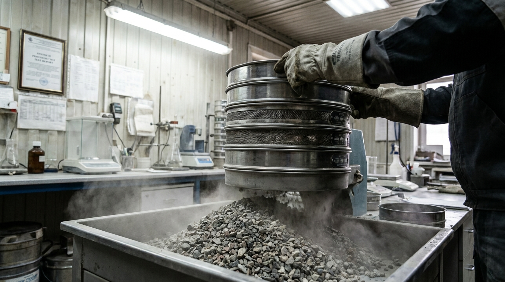
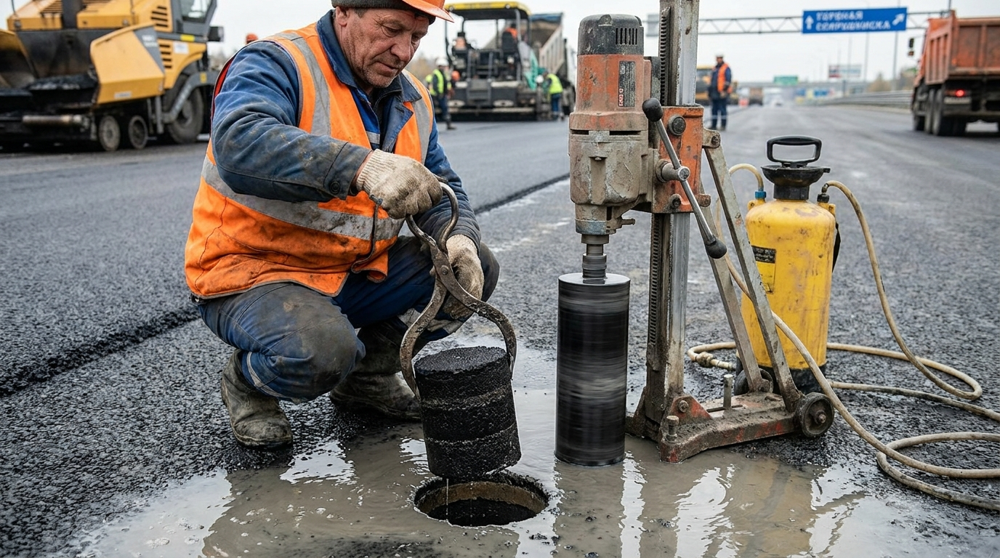
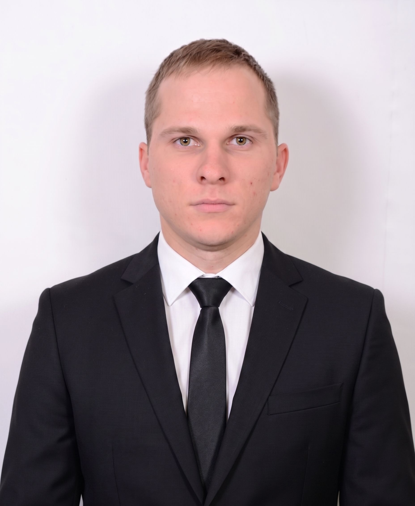

Испытание материалов
Лабораторные исследования и входной контроль инертных дорожно-строительных материалов. Определение пригодности смесей для устройства конструктивных слоев.

Кернирование и вырубки
Контроль уложенного верхнего и нижнего слоев асфальтобетона методом выбуривания цилиндрических проб. Проверка физико-механических свойств готового покрытия.
Операционный контроль
Контроль технологических процессов непосредственно на линии. Замеры плотности плотномерами, проверка параметров уплотнения конструктивных слоев дороги.
Лабораторные исследования материалов
Контроль качества дорожно-строительных материалов осуществляется в строгом соответствии с действующими национальными и межгосударственными стандартами РФ:
Щебень для дорожных работ
Действующий межгосударственный стандарт на щебень и гравий из горных пород, применяемые при строительстве и ремонте автомобильных дорог общего пользования.
Виды лабораторных испытаний:- Определение зернового (гранулометрического) состава на ситах;
- Определение марки дробимости при сжатии в цилиндре;
- Определение лещадности (содержания пластинчатых зерен);
- Определение содержания пылевидных и глинистых частиц.
Минеральный порошок
Действующий стандарт для минеральных порошков, используемых в качестве структурирующего наполнителя в асфальтобетонных смесях.
Виды лабораторных испытаний:- Определение тонкости помола и зернового состава;
- Определение средней плотности и пористости сухого порошка;
- Определение влажности и битумоемкости порошка.
Цемент для дорожного строительства
Современный национальный стандарт РФ на цементы для транспортного строительства. Применяется при устройстве монолитных дорожных покрытий и оснований.
Виды лабораторных испытаний:- Определение сроков схватывания и равномерности изменения объема;
- Определение предела прочности при сжатии и изгибе;
- Определение тонкости помола (удельной поверхности).
Асфальтобетонный гранулят (RAP)
Актуальный стандарт на асфальтобетонный гранулят, получаемый методом холодного фрезерования или дробления старых покрытия для повторного применения в дорожных слоях.
Виды лабораторных испытаний:- Определение количественного содержания вяжущего (битума) методом выжигания или экстрагирования;
- Определение зернового состава минеральной части гранулята;
- Определение влажности материала.
О лаборатории
ООО ДТЛ «ЭКСПЕРТ» — это независимая дорожно-техническая лаборатория, выполняющая полный спектр услуг по испытанию строительных материалов, операционному контролю и техническому сопровождению объектов дорожного хозяйства в г. Кургане и Курганской области.
Мы работаем как со строящимися объектами, так и в рамках экспертных проверок при ремонте и реконструкции автомагистралей, городских улиц и площадок производственного назначения.

Руководство
Директор:
Маглан Александр Владимирович
Высшее профильное дорожно-строительное техническое образование. Действующая аттестация в области строительного контроля дорожных одежд.
Контакты и график работы
Юридический статус и реквизиты
| Официальное название | ООО Дорожно-Техническая Лаборатория «ЭКСПЕРТ» |
| Дата регистрации | 26 марта 2024 года |
| Учредитель компании | Исоян Темур Жимоевич |
| Основной вид деятельности | Деятельность по техническому контролю, испытаниям и анализу прочая (ОКВЭД 71.20.9) |
| ИНН / ОГРН | 4500013260 / 1244500001063 |